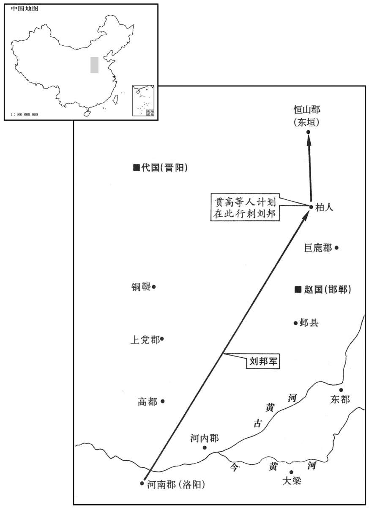

公元前199年资治通鉴：本年记事、原文与白话对照
按原书编年位置阅读；追叙和史论不等于本年发生的事件。白话采用所据译本，缺译不以生成译文补齐。
卷12 · 本年记事
公元前199年 · 汉太祖高皇帝八年
八年〔（壬寅、前一九九）〕

本年形势与背景参考图
冬，上〔【章：甲十五行本“上”下有“东”字；乙十一行本同；孔本同。】〕击韩王信余寇东垣，〔班志，高帝十一年，更名东垣曰真定；武帝元鼎四年，置真定国。垣，音辕。〕过柏人。〔班志，柏人县属赵国。括地志：柏人故城，在邢州柏人县西北十二里；至唐天宝元年，更柏人曰尧山。〕贯高等壁人于厕中，欲以要上。〔文颖曰：置人厕壁中以伺高祖也。要，一遥翻。〕上欲宿，心动，问曰：“县名为何？”曰：“柏人。”上曰：“柏人者，迫于人也。”遂不宿而去。十二月，帝行自东垣至。
冬季，汉高帝刘邦在东垣攻打韩王信的余党，经过赵国的柏人城。赵相贯高派人藏在厕所的夹墙中，准备行刺高帝。高帝正想留宿城中，忽然心动不安，问：“这个县叫什么？”回答说：“柏人。”高帝说：“柏人，就是受迫于人呀！”于是不住宿而离开。十二月，高帝从东垣城回长安。
春，三月，行如洛阳。
春季，三月，高帝前往洛阳。
令贾人毋得衣锦、绣、绮、縠、絺、纻、罽，操兵、乘、骑马。〔师古曰：贾人，坐贩卖者也。绮，文绘也，即今细绫也。絺，细葛也。纻，织纻为布及疏也。罽，织毛，若今毼及氍毹之类也。操，持也。兵，凡兵器也。乘，驾车也。骑，单骑也。贾，音古。衣，于既翻。絺，充知翻。纻，音伫。罽，居例翻。操，千高翻。余据：锦，织文也；绣，刺文而五采备者也；縠，绉纱也。骑，奇寄翻。〕
两版字句有差异，建议核对原文。
高帝下令，商人不准穿锦、绣、细绫、绉纱、细葛布、布、毛织品，不准持兵器、乘车、骑马。
秋，九月，行自洛阳至；淮南王、梁王、赵王、楚王皆从。〔从，才用翻。〕
秋季，九月，高帝一行从洛阳回长安。淮南王、梁王、赵王、楚王都随行。
匈奴冒顿数苦北边。〔数，所角翻；下同。〕上患之，问刘敬，刘敬曰：“天下初定，士卒罢于兵，〔罢，读曰疲。〕未可以武服也。冒顿杀父代立，妻群母，以力为威，未可以仁义说也。〔说，式芮翻。〕独可以计久远，子孙为臣耳；然恐陛下不能为。”上曰：“奈何？”对曰：“陛下诚能以适长公主妻之，〔适，读曰嫡；谓皇后所生也。长，知两翻。〕厚奉遗之，〔遗，于季翻；下同。〕彼必慕，以为阏氏，〔阏氏，音烟支。〕生子，必为太子。陛下以岁时汉所余、彼所鲜，数问遗，〔鲜，息善翻，少也。〕因使辨士风谕以礼节。〔风，与讽同。〕冒顿在，固为子婿；死，则外孙为单于；岂尝闻外孙敢与大父抗礼者哉！可无战以渐臣也。若陛下不能遣长公主，而令宗室及后宫诈称公主，彼知，不肯贵近，无益也。”帝曰：“善！”〔近，其靳翻。〕欲遣长公主。吕后日夜泣曰：“妾唯太子、一女，奈何弃之匈奴！”上竟不能遣。
匈奴冒顿屡次侵扰汉朝北部边境。高帝感到忧虑，问刘敬对策，刘敬说；“天下刚刚安定，士兵们因兵事还很疲劳，不宜用武力去征服冒顿。但冒顿杀父夺位，把父亲的群妃占为妻子，以暴力建立权威，我们也不能用仁义去说服他。唯独可以用计策，使他的子孙长久做汉的臣属，然而我担心陛下做不到。”高帝问：“如何做呢？”回答说：“陛下如果能把嫡女大公主嫁给他为妻，又赠送丰厚俸禄，他一定仰慕汉朝，以公主为匈奴的阏氏，生下儿子，肯定是太子。陛下每年四季用汉朝多余而匈奴缺乏的东西，频繁地慰问赠送他们，乘机派能说善辩的人士前去讽劝和讲解礼节。这样，冒顿在世时，他本是汉朝的女婿辈；他死后，您的外孙便即位为匈奴王单于。难道曾听说过外孙敢和外祖父分庭抗礼的吗？我们可以不经一战而让匈奴渐渐臣服。如果陛下舍不得让大公主去，而令宗室及后宫女子假称公主，他们知道了，不肯尊敬亲近，还是没有用。”高帝说：“好！”便想让大公主去。但吕后日日夜夜哭泣着说：“我只有太子和一个女儿，为什么把她扔给匈奴！”高帝到底没有办法让大公主去。